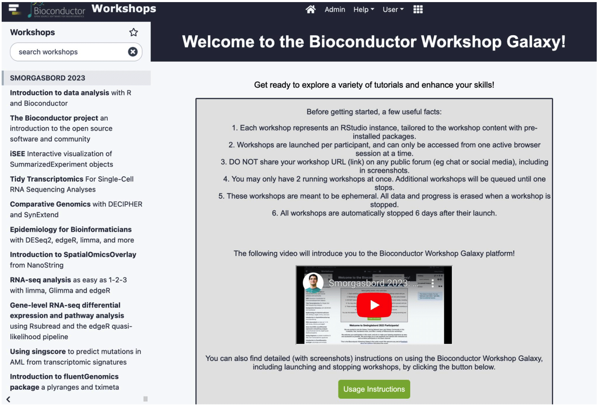

We’re delighted to share that Bioconductor was part of the Galaxy Smörgåsbord global online training for the first time this year. Over the week of May 22-26, we extended the power of R and Bioconductor to a wider, global audience.
Tutorials and Engagement
Our contribution to the Smorgasbord event centered on a series of comprehensive Bioconductor tutorials available on this page. This presented an excellent opportunity for learners to explore Bioconductor’s robust capabilities in bioinformatics and computational biology. The tutorials were facilitated through the Galaxy platform, with all necessary packages pre-installed for a smooth, hassle-free learning experience. In a collaborative spirit, instructors (acknowledged below) volunteered to answer learners’ questions on their respective tutorials through the Galaxy Training Network Slack during the training week. A total of 13 Bioconductor tutorials were offered, resulting in 62 registered users, 128 workshop launches, and 27 R histories submitted for Smorgasbord certificate.
Competition
To further encourage active participation, we ran a friendly competition. Participants who completed a Bioconductor tutorial and submitted an R history before June 4th were eligible to win a free virtual registration to the Bioconductor conference BioC2023. We congratulate the winner, Paul Yu, a Master’s student from De La Salle University, Manila, Philippines!
Our New Infrastructure
The Smörgåsbord event also marked the public launch of the new Bioconductor Workshop platform, a successor to the Orchestra platform. The new platform (workshop.bioconductor.org) is a Kubernetes deployment of a Galaxy fork, notably leveraging the Kubernetes Interactive Tools runner to launch Bioconductor RStudio-based containers, each representing a workshop. This stack is running on a cluster of Jetstream2 nodes, supported by NSF ACCESS allocation BIR190004. This platform will be employed for the annual Bioconductor conference BioC2023, and the ISMB/ECCB 2023 conference.

Looking Ahead
By adopting Galaxy, Bioconductor hopes to broaden both the breadth of workshops available in the Galaxy Training Network, as well as the audience of Bioconductor workshops. A broader range of learning opportunities will empower scientists to excel in their research and tackle more complex questions with greater confidence and efficiency. We also hope to work with the usegalaxy.* administrators to make Bioconductor workshops available on all usegalaxy instances. We look forward to seeing more learners engage with Bioconductor tutorials, and we are excited about the potential for Bioconductor to contribute to more global learning initiatives like this.
Acknowledgements
A big thank you to all the Bioconductor Smörgåsbord instructors, Laurent Gatto, Charlotte Soneson, Kevin Rue-Albrecht, Federico Marini, Stefano Mangiola, Aidan Lakshman, Chloe Mirzayi, Maddy Griswold, Megan Vandenberg, Stephanie Zimmerman, Matt Ritchie, Yunshun Chen, Dharmesh Bhuva, Mike Love, Alan Murphy, all the helpers, including our Bioconductor Carpentries Instructors, and the Smorgasbord organizers, Saskia Hiltemann and Helena Rasche.